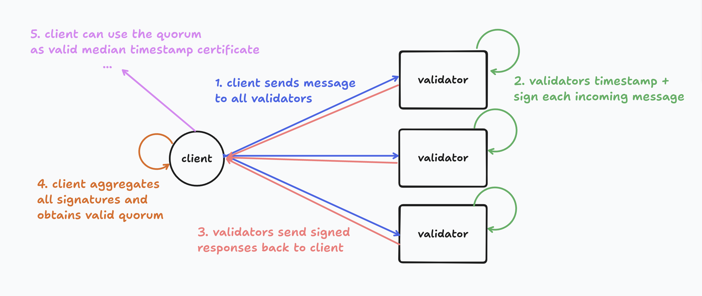

DATO
📖 DATO: Distributed Approximate Timekeeping Oracle
Introduction and Motivation
Blockchain systems require consensus in order to agree on a shared view of the world.
In the case of ~turing-complete smart contract platforms such as Ethereum, this shared view must essentially boil down to the exact state commitment of every newly produced block, which is the only way for all validators to deterministically sync all the way from genesis to the chain tip.
Other applications, such as simple payments, don't require full state machine replication: all they need to achieve is to prevent equivocation (double spending). In this case, a consensus-less approach may be used. [ABC][abc] and [Fastpay][fastpay] are good examples of this construction.
In this document, we introduce DATO, a consensus-less approach to timekeeping that can be used in a variety of applications to achieve one of the following benefits:
- Fair exchange accountability for applications like [PBS][pbs] and [TEE-Boost][tee-boost]
- Censorship-resistant message feeds for e.g. single-sequencer protocols like rollups or TEEs
High-level Design
DATO is a protocol that allows a group of validators to agree on the approximate time when a message was seen. This is achieved by sending a message $M$ to some validators $R$, getting each of their individual timestamps until a quorum of 2/3 is reached, and then calculating the median of all the timestamps to achieve the certified timestamp.
Each validator will sign over the message and the timestamp with their BLS private key, and clients can then aggregate these signatures into 1 quorum certificate. This certificate can then be verified by anyone / any chain (assuming PKI).
- Linear communication complexity: $n \times (m + r)$ ($m$ = message size, $r$ = response size)
- Minimal, constant latency
- Maximal throughput
Here is a high-level diagram of the happy-case flow:

- A client sends a message $M$ to all $N$ validators
- Each validator signs the message and their local timestamp, and sends it back to the client
- The client waits until a quorum of $2/3$ signatures is reached and calculates the median timestamp
- The client aggregates the signatures into a quorum certificate that can be used out of band
On top of this functionality, DATO also provides a way to obtain unavailability certificates for individual messages, to prove that a message was not seen by a quorum of validators at a given time. This is useful for attribution in the case of censorship.